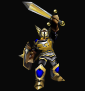

Captain


| Race |
Human |
| Faction |
Alliance |
Statistics
| Hit points |
600 |
| Hit point regeneration |
Always |
| Hit point regeneration rate |
0.25 HP/sec |
Captain (Warcraft III)
Captains are elite variants of the footmen that helped lead Alliance troops in the Third war. The brave captains did what they could to defend Lordaeron against the Scourge with Arthas.
Appearances
A Captain is fought in "Departures" in the first group of footmen that attacks Thrall's base.
A Captain unit appeared in several of the Scourge of Lordaeron campaign missions, following Arthas. This anonymous unit was split into three different characters in Arthas: Rise of the Lich King and World of Warcraft.
Two unnamed Captains that were part of the Town Guard of Vandermar Village in "Trudging through the Ashes".
A Captain was the leader of a wave in "The Crossing."
Three Captains can be found among various groups of humans in "King Arthas".
Two Captains working for Kul Tiras defended a trio of Eagle Cages (that contained hawks) on Theramore Isle in "A Blaze of Glory".
Spells and abilities